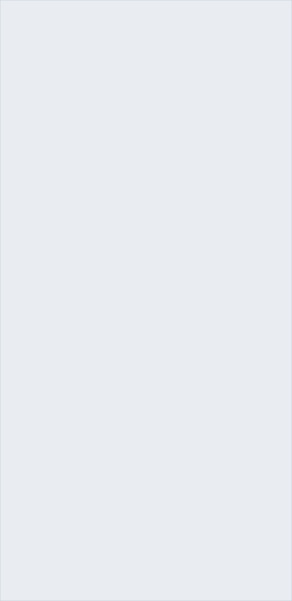

About Hmelj
A self-hosted, Gmail-style webmail client for IMAP/SMTP, Microsoft 365 and Exchange
Install
One Docker container and a volume. Running in a couple of minutes.
Step 2First Run
Create the admin account and attach your first mailbox.
Step 3Add Accounts
IMAP, Gmail, Outlook, Exchange — as many as you like, side by side.
Step 4Notifications
New-mail push to your desktop and phone, with quiet hours.
Hmelj is a universal, multi-account webmail client you run yourself. You sign in with a Hmelj account created on its own login page, then attach any number of mailboxes — a home IMAP server, Gmail, GMX, a Microsoft 365 work account, an on-premises Exchange server — through an in-app wizard. Read them one at a time, or all together in a unified All inboxes view where every message carries a coloured chip showing which account it came from.
It is a single Node.js process with no build step: the entire front end is plain HTML, CSS and JavaScript served as-is. Everything it stores — your accounts, settings, filters, contacts, calendars and the local message cache — lives in one directory on your own server. Mailbox passwords are encrypted at rest with AES-256-GCM.
Hmelj is Slovenian for hops. The icon is a hop cone resting in an open envelope.

At a Glance
- Multi-account and multi-user — every Hmelj user has their own mailboxes, settings, identities, contacts and filters
- Four backends — IMAP/SMTP, Gmail (app password or OAuth), Microsoft Graph, Exchange EWS — presented identically
- Unified inbox — merged Inbox and merged Sent across accounts, with per-account colours and unread counts
- Local SQLite cache — a background poller keeps it warm, so lists are instant instead of a live fetch on every click
- Real push notifications — Web Push (VAPID) for browsers and PWAs, Firebase for the Android app, with quiet hours and per-folder rules
- Conversation view — a message and its replies as one row, opened as a stack
- Server-side filters — move, copy, redirect, auto-reply, delete, mark, star; run on a schedule or on demand, and they catch up on whatever arrived while Hmelj was off
- Calendar and contacts — CalDAV, Google, Microsoft 365 and Exchange in one view, and Hmelj can publish calendars of its own for a phone to subscribe to
- Search that goes inside messages — an optional local full-text index, per account, plus saved searches and snooze
- Installable — PWA on desktop and mobile, plus a native Android APK
- Light, dark and custom themes, English and Slovenščina
- One container — published for
linux/amd64andlinux/arm64
What it is not
It also has no cloud component of any kind. There is no Hmelj service, no account to create with anyone, and nothing phones home. See Security & Privacy.
↑ TopFeatures
Everything in the box
📬 Accounts
- IMAP + SMTP — any server, with TLS and self-signed-certificate options
- Gmail — an app password, or "Sign in with Google" (OAuth2 / XOAUTH2)
- Microsoft 365 & Outlook.com — OAuth sign-in, then Microsoft Graph rather than IMAP
- Exchange (EWS) — on-premises Exchange over NTLM
- Unified views — merged Inbox and Sent, coloured per-account chips
- Per-account colour, name, sender name and its own special folders
- Account presets — admin-editable, prefill server settings for common providers
- Share an account with another Hmelj user, by username; revocable at any time
- Connection test before an account is ever saved
- Full-text index, per account — turn it on only for the mailboxes you actually search inside
📖 Reading
- Reading pane right, bottom, in a new window, or list-only
- Conversation view — replies grouped into one row and opened as a stack
- Sandboxed rendering — message HTML is sanitised server-side and drawn in an isolated iframe
- External-image policy — always, trusted domains only, ask per message, or never
- Collapsed quotes — the reply you were sent, with the thread under it behind a ⋯
- One-click unsubscribe — RFC 8058 POST,
mailto:, or the sender's page - Attachments — inline preview for images, PDF, audio and video, with a progress bar
- Find in message (Ctrl/Cmd+F) with live match count
- Sender verification — the SPF/DKIM/DMARC result your own server recorded, as a quiet chip or a warning
- Calendar invitations — Accept / Tentative / Decline, with or without a reply
- Read receipts — asked for, and answered, on your terms
- Auto mark-as-read — immediately, after a delay, only via the icon, or never
- Print, View headers, Save as EML, Open in a new view
✏️ Composing
- Rich HTML or plain text — bold, italic, lists, links, fonts, colours
- Multiple identities per account, each with its own signature and signature policy
- Reply / Reply all / Forward, quote above, below, or not at all
- Attachments, Cc/Bcc, priority, read-receipt request
- Draft autosave on a configurable interval, plus manual save
- Scheduled sending — queued on the server, retried with backoff, reschedulable
- Undo send — a window you choose, held on the server, so closing the tab still honours it
- Templates — reusable snippets, inserted where the caret is
- Before it goes out — "you said it was attached", and "you replied to one of nine"
- Spell checking as you type — Slovenian and English, detected automatically
- Contact autocomplete, learned from the mail you actually send
- Contact groups — one name in To, Cc or Bcc stands for a whole set of addresses
- Backspace takes a whole recipient at a boundary, group or person, the way Outlook does
🗂 Organising
- Full folder tree — create, rename, delete, empty, hide, per-folder unread counts
- Filters — conditions on subject/from/to/content/size/date; move, copy, redirect, auto-reply, delete, mark read/unread, star
- Spam and Archive — one gesture each way, with the return trip remembered
- Select mode — Ctrl+click, Shift+click for a whole run, or the checkbox, then act on everything at once
- Swipe gestures on mobile, with a configurable direction
- Search — Gmail-style syntax, cached-first with a one-click "search everywhere"
- Search inside messages — a local full-text index, opt-in per account, with a size ceiling
- Saved searches — pinned in the sidebar with their own unread count, re-run live every time you open one
- Snooze — the message really moves out and comes back when you asked, with an optional calendar reminder
- Keyboard shortcuts — Gmail's letters and Outlook's Del / Ctrl+Q / Ctrl+U, ? for the list
- Mailbox analytics — where the quota went, who sends the most, what is safe to delete
- Contacts — address book, Google-CSV and vCard import, and a direct pull from a Microsoft or Exchange account
📅 Calendar & Contacts
- Calendars from anywhere — CalDAV, Google, Microsoft 365, Exchange, or one that lives in Hmelj itself
- Month, week, day and agenda, each calendar in its own colour, with time-zone-correct events
- Create and edit — repeats, all-day events, attendees, and Add to calendar straight from a message
- Reminders delivered as push, whether or not Hmelj is open
- Invitations — Accept / Tentative / Decline, replying or not
- Address book — learned from your own mail, imported from Google CSV or vCard, or pulled from Microsoft and Exchange
- Groups — name a set of addresses and write to all of them by typing that name
- Hmelj as a CalDAV/CardDAV server — subscribe a phone or another app, with per-device app passwords and busy-only sharing
🔔 Notifications
- Web Push (VAPID) — works with Hmelj fully closed, on desktop and mobile browsers
- Android app push via Firebase, with Mark as read / Delete right on the notification
- Per-device — see and remove every registered device
- Quiet hours, per-account and per-folder, with weekday selection
- Holidays — skip notifications on public holidays (Slovenian calendar)
- Mute a folder for an hour, until tomorrow, or until a time you pick
- Launcher badge with the unread count in the Android app
🛠 Running it
- One container,
linux/amd64andlinux/arm64, non-root, with a healthcheck - Everything in one volume — accounts, settings, filters, cache, encryption key
- Admin panel — users, sign-up control, OAuth clients, account presets, custom fonts
- Per-user error log — filters that failed, mail that could not be sent, servers unreachable
- Instant cross-device sync over Server-Sent Events
- Themes light / dark / system, plus custom colours; resizable columns
- Export — settings, filters, contacts, groups and calendars as one zip; mail as streamed mbox, one folder at a time
- English and Slovenščina, switchable per user


Installation
One container, one volume, one port
Hmelj needs Node.js 24 or newer and nothing else — no database server,
no Redis, no external services. The published image is built for
linux/amd64 and linux/arm64, so it runs on a normal server and
on a Raspberry Pi 4/5, a Synology or an ARM VPS alike.
Docker Compose (recommended)
1. Create a directory and put this in docker-compose.yml:
services:
hmelj:
image: ghcr.io/thehijacker/hmelj:latest
container_name: hmelj
restart: unless-stopped
ports:
- "3000:3000"
env_file: .env
volumes:
- hmelj-data:/data
volumes:
hmelj-data:2. Create a .env next to it. Every value has a working
default, so the shortest useful file is a single line — but read
Environment Variables before you settle on one:
PORT=3000 # Encrypts stored mailbox passwords. Leave it unset and Hmelj generates # /data/secret.key on first start instead — either way, BACK IT UP. # HMELJ_SECRET=a-long-random-string
3. Start it:
docker compose up -d
Hmelj is now at http://localhost:3000. Go to First Run.
/data, then drops to an unprivileged user before any application
code runs — so a host directory owned by root, which is the usual
case, works with no preparation. Set PUID and PGID if
you want the files to belong to a specific account instead of the default
1000:1000:
environment: - PUID=1000 - PGID=1000 volumes: - /srv/hmelj/data:/data
--user skips the whole
adjustment — you have said what you want, and it could not chown anyway.
Plain Docker
docker run -d \ --name hmelj \ --restart unless-stopped \ -p 3000:3000 \ --env-file .env \ -v hmelj-data:/data \ ghcr.io/thehijacker/hmelj:latest
The image runs as the non-root node user, keeps all state in the
/data volume, and carries a healthcheck that polls /healthz
every 30 seconds — so docker ps tells you whether it is actually serving,
not merely running.
ghcr.io/thehijacker/hmelj:latest is the newest tagged
release. :dev is rebuilt from every push to main — useful for
following development, not for a mailbox you care about. Version tags
(:1.0.0, :1.0) pin exactly.
From source
git clone https://github.com/thehijacker/hmelj.git cd hmelj npm ci cp .env.example .env # read it through, then edit npm start # → http://localhost:3000
There is no build step. public/ is served exactly as it is on disk, so an
edit shows up on the next refresh.
To try it without a real mail server, Hmelj ships a mock IMAP + SMTP pair with sample messages:
npm run mock # IMAP on 127.0.0.1:1143, SMTP on 127.0.0.1:1025 npm start # in another terminal
Sign up, then in the account wizard choose IMAP + SMTP and enter
127.0.0.1 port 1143 for IMAP and 1025 for SMTP,
user testuser, password testpass, TLS off,
"allow self-signed" on.
Run the test suite with npm test — 19 suites, no framework, no network.
Reverse proxy & TLS
An nginx location block that works:
location / {
proxy_pass http://127.0.0.1:3000;
proxy_http_version 1.1;
proxy_set_header Host $host;
proxy_set_header X-Real-IP $remote_addr;
proxy_set_header X-Forwarded-For $proxy_add_x_forwarded_for;
proxy_set_header X-Forwarded-Proto $scheme;
proxy_set_header Upgrade $http_upgrade;
proxy_set_header Connection "upgrade";
# Attachments and uploads
client_max_body_size 50m;
# Server-Sent Events (/api/events) must not be buffered, or cross-device
# updates arrive in delayed bursts instead of instantly. Hmelj already sends
# X-Accel-Buffering: no, which nginx honours by itself — this is only needed
# if something in front of nginx strips that header.
# proxy_buffering off;
proxy_read_timeout 3600s;
}HMELJ_PUBLIC_URL explicitly instead of
relying on the guess — it is the single most common cause of an OAuth sign-in that fails
at the last step.
systemd (without Docker)
[Unit] Description=Hmelj webmail After=network.target [Service] Type=simple User=hmelj WorkingDirectory=/opt/hmelj EnvironmentFile=/opt/hmelj/.env ExecStart=/usr/bin/node --openssl-legacy-provider server/index.js Restart=on-failure [Install] WantedBy=multi-user.target
--openssl-legacy-provider is not optional if you use an Exchange (EWS)
account. The NTLM handshake computes a DES-ECB LM hash on every authentication —
real, historic NTLM behaviour that OpenSSL 3 no longer exposes by default. Without the
flag the process throws on every EWS sign-in. It only changes which legacy algorithms are
available; nothing else in Hmelj uses them.
FCM_SERVICE_ACCOUNT_PATH resolves against the working
directory. Under systemd that is WorkingDirectory=, which is usually
not where you were standing when you tested by hand — and the only symptom is one info
line saying Android push is "not configured". Use an absolute path, or leave the setting
out entirely and put the file at DATA_DIR/fcm-service-account.json.
Updating
docker compose pull docker compose up -d
The volume is untouched, so accounts, settings, filters and the cache all survive. The browser picks up the new front end on the next load — Hmelj's service worker is network-first for the app shell, so there is no stale-cache dance. If a page looks half-updated, one hard refresh settles it.
↑ TopData Directory
Everything Hmelj knows, in one place
DATA_DIR (/data in the container, ./data from
source) holds all persistent state. Back up this directory and you have backed up Hmelj.
/data
├── auth.json Hmelj login accounts (scrypt-hashed passwords, admin flag)
├── secret.key AES-256-GCM key for stored mailbox credentials (mode 600)
├── presets.json account presets, editable in Settings → Admin
├── oauth.json OAuth client IDs (Google's secret encrypted), mode 600
├── fcm-service-account.json optional: Firebase key for Android push (you add this)
├── cache.sqlite message cache, analytics index and the per-user
│ error log (+ its -wal and -shm sidecars)
└── users/
└── <user>/
├── accounts.json mail accounts; passwords and OAuth tokens encrypted
├── settings.json that user's settings
├── identities.json identities and signatures
├── contacts.json address book
├── filters.json filter rules
├── push-subscriptions.json every device registered for notifications
├── accountOverrides.json per-viewer tweaks to a shared account
├── refile-origins.json where spam/archived mail came from, for the trip back
├── unsubscribed.json newsletters already unsubscribed from
├── holiday-overrides.json / custom-holidays.json scheduler calendar edits
└── scheduled/ one file per queued scheduled sendsecret.key is the one file you cannot regenerate.
It decrypts every stored mailbox password and OAuth refresh token. Lose it and every
account has to be signed in to again; replace it with a different value and Hmelj will
fail to decrypt what it already has. If you set HMELJ_SECRET instead, that
value is the key — treat it the same way.
Putting the cache somewhere else
cache.sqlite is written constantly by the background sync, and those writes
are synchronous. If DATA_DIR sits on network-attached storage — NFS, SMB, a
NAS mount — a slow write can block Node's event loop and stall completely unrelated
work, including interactive requests. Point just the cache at fast local disk:
CACHE_DIR=/var/lib/hmelj-cache
The cache is disposable. Deleting it costs nothing but a re-sync.
↑ TopFirst Run
From an empty container to reading your mail
The first user is the admin
There is no default account and no default password. Open Hmelj, click Sign up, and pick a username and password. That first account is automatically an admin: it gets a Settings → Admin tab where it can manage other users, control sign-ups, register OAuth clients, edit account presets and upload fonts.
Hmelj accounts are entirely separate from mail accounts. The password you choose here is
a Hmelj password, hashed with scrypt in auth.json; it is never sent to any
mail server.
Letting others sign up
By default anyone who can reach the page can create an account. Once your household or
team have theirs, turn it off — either with ALLOW_SIGNUP=false in the
environment, or at runtime in Settings → Admin → Sign-up. The very
first user can always register, so you cannot lock yourself out of a fresh install.
Attaching a mailbox
A brand-new Hmelj account has no mail in it, because it has no mailbox yet. Open the user menu (your avatar, bottom left) → Mail accounts → Add mail account, and follow Accounts.
The wizard tests the connection before saving, so a typo in a hostname or a wrong password fails there and then rather than becoming a mysteriously empty inbox.

Accounts
Attaching mailboxes, and what each type needs
Account types
| Type | Talks to | Credential | Use it for |
|---|---|---|---|
| IMAP + SMTP | Your IMAP and SMTP servers directly | Password (or app password) | Anything standard — a home server, GMX, Fastmail, a hosting provider, Gmail with an app password |
| Gmail (sign in with Google) | imap.gmail.com / smtp.gmail.com, with an OAuth token instead of a password |
Google sign-in | Gmail, when you would rather not create an app password |
| Microsoft (Outlook / Microsoft 365) | Microsoft Graph — not IMAP at all | Microsoft sign-in | outlook.com, hotmail.com, live.com, and Microsoft 365 work accounts |
| Exchange (EWS) | An on-premises Exchange server's Exchange.asmx endpoint |
Username, password, NTLM domain | Exchange 2013 and later, on your own network |
Mix them freely. Every type ends up in the same list, the same folder tree and the same unified inbox; the differences are noted where they exist.
The wizard, field by field
Shared by every type:
- Account name — what you call it: Home, Work, GMX. Shown on the account chip.
- E-mail address — the address this mailbox is; also the default IMAP username.
- Sender name — shown next to your address on outgoing mail.
- Colour — one of the swatches or a custom colour, used for this account's chip everywhere in the UI.
IMAP + SMTP only:
- Provider — an optional preset that prefills the server fields (see Account presets).
- Incoming (IMAP) — server and port, username (defaults to the e-mail address), password, Use TLS, Allow self-signed certificate.
- Outgoing (SMTP) — Same server as IMAP and Same credentials as IMAP are on by default and hide the fields they cover; untick either to set them separately.
Exchange (EWS) only: the full https://…/EWS/Exchange.asmx
URL, the NTLM domain if your server requires one, username, password, and an
Allow self-signed certificate option.
The two sign-in types have no server, port or password fields at all — signing in is the configuration. You pick a provider and press Sign in; the provider's own page opens in a separate window (or your browser, in the Android app). Hmelj never sees your password, only the token the sign-in hands back, encrypted like every other credential.
Finish with Test & save. Hmelj connects, verifies the credentials,
and auto-detects the Sent, Drafts, Trash, Junk and Archive folders from the server's own
IMAP SPECIAL-USE flags — including Gmail's [Gmail]/… names. Only then is
anything saved.
Checking for new mail
Set per account, in the wizard's New mail section. This is the single biggest lever on how quickly mail appears and how much load Hmelj puts on the server.
| Setting | What happens |
|---|---|
| Live (IMAP) | Holds one extra connection open using IMAP IDLE. New mail shows up in about a second, at the cost of that connection. |
| Live (Exchange) | A pull subscription polled every ~15 seconds. Exchange reports exactly what changed since the last watermark, which a plain timer cannot — a timer re-reads a fixed newest-50 window and a busy mailbox can outrun it. True EWS streaming is not possible over this project's NTLM transport. |
| Live (Microsoft Graph) | Asks Microsoft for the Inbox counts every ~30 seconds — one small request per check. Graph's real push would require this Hmelj to be reachable from the public internet, so it is not used. |
| Every 30 s … 15 min | A fixed timer. Pick a long one for mailboxes you do not need to hear about immediately. |
Mix freely — watch your main mailbox live and check a low-traffic one every 15 minutes.
Live accounts still run a slow background poll as a safety net, so a dropped watcher
costs latency and nothing else. Accounts that say nothing default to
SYNC_INTERVAL_MS.
A second connection
By default Hmelj holds one IMAP connection per account and every operation takes an exclusive lock on it, so opening a message can end up queued behind an in-flight background sync. Allow a second connection lets background sync use its own.
Sharing an account
Settings → Accounts → Share on an account you own, then type another Hmelj user's username. They see that mailbox in their own account list, badged 🔗 Shared by <your username>, and can read it and send through it.
What stays with the owner:
- Special-folder mapping, and creating, renaming, deleting or emptying folders — these touch the real mailbox.
- Which folders are synced. A folder the owner excluded has nothing cached, so the grantee cannot show it either.
- The credentials. A grantee never sees them and cannot edit the connection.
What the grantee gets of their own: which of the account's folders appear in their sidebar, and their own identities for sending through it. Revoking access (the ✕ on the grantee's chip) removes both.
↑ TopGmail
Two ways in, and the trade-off between them
Google stopped accepting an ordinary account password over IMAP years ago. Hmelj offers the two things it does still accept:
| App password | Sign in with Google | |
|---|---|---|
| Account type in the wizard | IMAP + SMTP | Gmail (sign in with Google) |
| Set-up work for you | Two minutes in your Google account | None |
| Set-up work for the Hmelj admin | None | A Google Cloud OAuth client, once per Hmelj server |
| Requires 2-step verification on the Google account | Yes — app passwords do not exist without it | No |
| What Hmelj stores | A 16-character password, encrypted | A refresh token, encrypted |
| Underneath | Identical: IMAP to imap.gmail.com, SMTP to smtp.gmail.com | |
App password
1. Turn on 2-step verification at myaccount.google.com/security if it is not on already. Google will not offer app passwords without it.
2. Go to myaccount.google.com/apppasswords, name it "Hmelj", and copy the 16-character password it generates. Google shows it once.
3. In Hmelj, add an IMAP + SMTP account. Choose the Gmail preset if your admin left it in place, or enter the servers by hand:
| Server | Port | TLS | |
|---|---|---|---|
| IMAP | imap.gmail.com | 993 | Yes |
| SMTP | smtp.gmail.com | 465 | Yes |
Username is your full Gmail address; the password is the app password, with the spaces removed.
Sign in with Google
Choose the Gmail (sign in with Google) account type, press Sign in, and complete Google's own sign-in page in the window that opens. There is nothing else to fill in — Hmelj already knows Gmail's servers.
Google will warn that this app is not verified. That "app" is your own Hmelj server, registered by your own admin in their own Google Cloud project. Choose Advanced → Continue.
Creating the Google client ID (admin, once)
This is done once per Hmelj server by an administrator. It is free, and the client stays yours — Hmelj deliberately has no shared client to fall back on.
1. Create a project. Open the Google Cloud Console and create a project (or reuse one). Everything below happens inside it.
2. Configure the OAuth consent screen. APIs & Services → OAuth consent screen. Choose External unless you are a Google Workspace organisation configuring this for your own domain, fill in an app name and your own e-mail as the support and developer contact.
3. Add the scope. On the consent screen's Scopes step, add
https://mail.google.com/ — the only scope Google offers that permits IMAP
access at all. It is listed as a restricted scope; that is expected and
does not need verification for your own use.
4. Set the publishing status to "In production". This one matters more than it looks — see the warning below.
5. Create the client. APIs & Services → Credentials → Create credentials → OAuth client ID, application type Web application. Under Authorized redirect URIs add exactly:
https://your-hmelj-host/oauth/callback
Settings → Admin → OAuth providers shows the exact string for your instance — copy it from there. It must match byte for byte.
6. Tell Hmelj. Google shows a Client ID (ending in
.apps.googleusercontent.com) and a Client secret (starting
GOCSPX-). Paste both into Settings → Admin → OAuth providers → Google, and
save. The secret is stored encrypted and is never sent back to the browser.
invalid_grant and a "sign in again" badge. Setting the publishing status to
In production removes that expiry and does not require going
through Google's verification review — the unverified-app warning simply stays, which is
fine for a server you run for yourself.
http://localhost or a custom-scheme
redirect, which a server-side callback on a real hostname cannot use.
Instead of the Admin UI you can set GOOGLE_OAUTH_CLIENT_ID and
GOOGLE_OAUTH_CLIENT_SECRET in the environment; those win, and the Admin
fields then show as read-only.
Microsoft / Outlook
Outlook.com, hotmail.com, live.com and Microsoft 365
Microsoft no longer accepts a password for IMAP or SMTP on these accounts — not even an app password. They sign in with OAuth2, and Hmelj then talks to the mailbox over Microsoft Graph. You complete the real Microsoft sign-in page once; Hmelj stores the resulting refresh token, encrypted with the same key as everything else.
Why Graph, not IMAP with a token
Microsoft does still support IMAP with an OAuth token — but IMAP has to be switched on
for the mailbox itself, and it is off by default on personal Outlook.com
accounts. The result is a sign-in that visibly succeeds followed by
User is authenticated but not connected, a failure with no obvious cause
and no fix inside Hmelj. Graph never touches that stack, so there is nothing to enable
in your Outlook settings.
Creating the app registration (admin, once)
You need your own Microsoft app registration. It is free, takes a few minutes, and stays yours.
1. Register the app. Microsoft Entra admin center → App registrations → New registration.
- Supported account types: Accounts in any organizational directory and personal Microsoft accounts. This is what makes outlook.com / hotmail.com / live.com addresses work.
- Leave the Redirect URI blank here. It is added in the next step, where the platform matters.
2. Add the redirect URI — as a public client. Authentication → Add a platform → Mobile and desktop applications → Custom redirect URIs:
https://your-hmelj-host/oauth/callback
- Registered as Web, Azure treats the app as a confidential client and
the token endpoint demands a client secret —
AADSTS7000218. - Registered as Single-page application, it demands a browser-side
token exchange Hmelj cannot do —
AADSTS9002327— and caps refresh tokens at 24 hours.
3. Do not create a client secret. There is nothing to add under Certificates & secrets. Hmelj signs in as a public client and proves the exchange with PKCE. An old secret from a previous set-up can be deleted; Hmelj never sends one.
4. Grant the API permissions. API permissions → Add a permission → Microsoft Graph → Delegated permissions:
| Permission | Needed for |
|---|---|
Mail.ReadWrite | Reading, flagging, moving, deleting, drafts |
Mail.Send | Sending |
offline_access | Getting a refresh token at all — without it the account stops working in an hour |
Contacts.Read | Only the "Import from Microsoft" button in Settings → Contacts. Leave it out and everything else still works. |
openid and email are also requested, purely so the token
response carries an id_token Hmelj can read the signed-in address out of —
that is what catches "you typed one address and signed in as another".
Telling Hmelj about it
5. Settings → Admin → OAuth providers → Microsoft. Paste the
Application (client) ID. Leave Tenant as
common unless you registered a single-tenant app. Save.
6. Settings → Accounts → Add mail account → account type Microsoft (Outlook / Microsoft 365) → type the address → Sign in → Test & save. There is no server, port or password to fill in.
The environment-variable equivalents are MS_OAUTH_CLIENT_ID and
MS_OAUTH_TENANT.
/oauth/callback URI under
Mobile and desktop applications, check the Graph permissions above are present,
and you are done. One registered for an older IMAP/XOAUTH2 set-up needs its redirect URI
moved off the Web platform, and its Office 365 Exchange Online
permissions replaced with the Graph ones — IMAP.AccessAsUser.All and
SMTP.Send grant nothing to Graph.
Hmelj translates Microsoft's AADSTS… codes into what to change and where,
while keeping the original text — it carries the trace IDs Microsoft support asks for.
What behaves differently
- New mail on Live monitoring is a 30-second poll of the Inbox counts, not true push (see Checking for new mail).
- "Replied to" markers are not tracked. Graph exposes that only as an extended MAPI property.
- Everything else — read, send, reply, flag, move, delete, drafts, search, attachments, filters, the unified inbox — behaves exactly as it does for an IMAP account.
403 disallowed_useragent). If a popup blocker eats the window, allow popups
for your Hmelj host.
Exchange (EWS)
On-premises Exchange, over NTLM
For an Exchange server on your own network that speaks Exchange Web Services. Tested against Exchange 2013; later versions use the same protocol.
| Field | Example |
|---|---|
| Server URL | https://mail.example.com/EWS/Exchange.asmx |
| Domain | The NTLM domain, if your server requires one |
| Username | Defaults to the e-mail address |
| Password | The mailbox password |
| Allow self-signed certificate | For an internal CA |
Reading, sending, moving, deleting, flagging, search, contact import, calendars and meeting responses all work, and so does managing folders — create, rename, move, delete and empty. Live monitoring is a 15-second pull subscription: Exchange reports exactly what changed since the last watermark, which is more reliable than a timer on a busy mailbox.
--openssl-legacy-provider
or every EWS sign-in throws. The Docker image and npm start already do; a
hand-written systemd unit or process manager must too. See
systemd.
Identities & Signatures
Who a message is from, and what it ends with
An identity is a from-address plus the details that travel with it. Every identity is linked to a sending account, so a reply from your GMX identity goes out through GMX's SMTP and lands in GMX's Sent folder. Aliases are just extra identities on the same account.
Settings → Identities. Each one has:
- Name and e-mail address — what recipients see
- Organization and Reply-To — optional headers
- Account — which mailbox actually sends it
- Default — the one preselected in a new message
- Signature, with its own policy: new messages only, new messages and replies, always, or never
The signature is placed above the quoted original on a reply or forward — where a person reads it — rather than at the very bottom under the whole thread.
↑ TopFolders
The tree, the special ones, and what shows in the sidebar
Hmelj shows the account's full IMAP folder tree. Settings → Folders manages it, one account at a time.
Special folders
Five roles are mapped to real folders: Sent, Drafts,
Trash, Junk/Spam and Archive.
Hmelj auto-detects them from the server when the account is added — using IMAP
SPECIAL-USE flags, which is what makes Gmail's [Gmail]/Sent Mail land in
the right place. Fix the mapping here if sending or saving a draft ever files something
in the wrong folder.
Junk and Archive may be set to (None), and that genuinely means none: Mark as spam and Move to Archive then stop appearing in the message menus for that account.
Managing folders
- Show in sidebar — per folder, per account. Hiding a folder does not delete anything.
- Create, rename, delete, empty — these act on the real mailbox.
- Mark all as read and Mute live on the folder's own right-click menu in the sidebar.
- Each folder shows its message and unread counts.
What gets synced
The background sync does not walk every folder. It covers the Inbox and its subfolders plus Sent — that is what the unified views and the fast lists are built from. Other folders are browsed live against the server when you open them, and are always fully reachable through Search everywhere.
↑ TopThe Message List
Everything you can do without opening anything
All inboxes vs one account
The account switcher at the top of the sidebar chooses between All inboxes — a merged Inbox and merged Sent across every account, with a coloured chip on each row naming its source — and one account's own full folder tree.
The unified view spans every folder of an account except Sent, Trash, Junk and Drafts, so mail your server filed into a subfolder still shows up there.
Right-click / long-press
Right-click a row on a desktop, long-press it on a phone:
- Mark as read / unread
- Mark as spam or Not spam, and Move to Archive or Move out of Archive — whichever the account has folders for
- Delete
Select mode
Ctrl+click (Cmd on a Mac) a row turns select mode on and ticks it; from then on an ordinary click keeps toggling. Then act on the whole selection at once — delete, move, mark read or unread. Desktop only: a touch screen has no modifier key, and long-press already means something on these rows.
Shift+click takes a whole run at once: click a message, hold Shift, click one further down, and everything between them is ticked, both ends included. It works before select mode is on and after, and it only ever adds — a second Shift+click extends the run rather than re-cutting it, so a mis-aimed click cannot quietly unpick messages you had already chosen.
Escape
Escape dismisses whatever is on top — a dialog, the theme picker, the attachment preview, compose (through its usual save-or-discard prompt), Settings, mailbox analytics — one layer per press, in the order they are stacked on screen. It is the keyboard's version of the phone's back key, which walks the same list.
It stops at the last overlay, deliberately. The back key carries on into the page itself — closing the message you are reading, then returning to All inboxes — and Escape doing that would be a surprise rather than a convenience.
Ticking a conversation row selects every message in it — but never the copies in Sent, so deleting an inbox thread never deletes your own replies.
Swipe gestures
On a phone, drag a row sideways. Past about a third of the width the action fires: read/unread one way, delete the other. Which direction does which is a setting, and the whole gesture can be turned off. A swipe-delete can be taken back from the message that appears afterwards.
Spam and Archive
Neither entry appears unless the account actually has that folder — the answer
comes from the server's own folder list, so the menu can never offer something that then
fails. Hmelj also stands in the server's real \Junk / \Archive
folder if the stored name has gone stale.
On the way out, where each message came from is written down. On the way back, Not spam returns each message to the folder it actually left — one move per remembered folder, and the Inbox for anything unrecorded, which is the common case since most spam was filed by the server and was never anywhere else. Both directions are optimistic and offer an Undo.
Snooze
A message you cannot deal with now, back in front of you when you can. Right-click a row (long-press on a phone) → Snooze…, or press z. Pick Later today, Tomorrow morning, This weekend, Next week, or an exact date and time.
The message really moves, into a Snoozed folder created on the
account the first time you use it, and comes back to where it was at the time you chose —
marked unread, with a notification. It moves for a reason: hiding it only inside Hmelj would
leave it sitting in the Inbox on your phone, in Thunderbird, and in your provider's own
webmail.
- A 🕰️ Snoozed row appears in the sidebar with a count, listing what is waiting and when each one is due. The
Snoozedfolder itself is not shown there — it would be a second, worse entry for the same thing, saying that a message is gone without saying when it comes back. It is still a real folder on the server, visible from Outlook and from your phone, and it is listed in Settings → Folders marked as Hmelj's. - Click one, or use its menu, to bring it back now or change the time.
- If Hmelj is not running when a message comes due, it comes back as soon as Hmelj is. Nothing is missed, it is just late.
- Moved a snoozed message somewhere yourself in the meantime? That is treated as your decision — Hmelj drops the reminder rather than dragging the message back out of where you filed it.

Sorting and filtering
The list header sorts by date, sender or subject. The toolbar filters to unread only or starred only. Note that a filter or a search switches conversation grouping off — a count that meant "matching messages" rather than "messages" would be misleading.
↑ TopReading a Message
What the reading pane does, and why
Message bodies are sanitised on the server and then rendered inside a
sandboxed iframe with no same-origin access. A newsletter's own CSS
therefore cannot reach out and restyle Hmelj, and its scripts never run at all.
<style> blocks and inline styles are kept, because that is what makes
newsletters look like themselves; @import, expression() and
behavior are always stripped.

Every person in the header — From, To and Cc — is a chip showing both the display name and the address. Right-click or long-press one for Copy address and New message.
Is the sender who they say?
When a message arrives, the receiving mail server checks it against the rules the sender's domain publishes — SPF (was this server allowed to send for that domain), DKIM (is the signature intact) and DMARC (does the domain in the From line stand behind either result) — and writes the outcome into the message. Hmelj reads that verdict back out and shows it.
| Verdict | You see |
|---|---|
| Checks passed | 🔒 Verified sender, a quiet chip beside the sender's name. Hover it for the individual SPF, DKIM and DMARC results. |
| DMARC failed | A red banner above the message: it claims a domain it is not authorised to send for. Treat its links and attachments as untrusted. |
| Name does not match address | A red banner. The message wears the name of somebody in your contacts over an address that is not theirs. |
| Nothing was checked, or only partly | Nothing at all. |
Why an unchecked message is not marked as suspect. A mailing list breaks SPF by design — it sends on your behalf from its own servers — and plenty of small mail hosts run no checks whatsoever. Flagging either would put a warning on ordinary mail every day, which is precisely how people learn to click past warnings. Only the two cases worth interrupting you over say anything.
The second banner is the one that catches people. A message from
ceo@totally-real-invoices.com signed "Ana Novak" passes every check
there is, because the domain it really came from did authorise it. Nothing in SPF, DKIM or
DMARC can see that. Matching the display name against your own address book can.
Only the topmost verification header is read — the one your own server
wrote. Anything below it arrived with the message and was written by whoever's honesty is
the question, and a convincing forged "everything passed" is trivial to include. If your
mail passes through several of your own servers before reaching the mailbox, the account
can be told which one to trust by name (authservId, settable through the
accounts API; there is no field for it in Settings yet).
Turn the whole thing off with Show whether the sender is verified in Settings → Reading.

External images
Remote images are the standard way a sender learns you opened their mail. Settings → Reading offers four policies:
| Policy | Behaviour |
|---|---|
| Always load | No protection; everything loads. |
| Only from trusted domains (default) | A list you keep, one domain per line, in Settings → Reading. |
| Ask per message | A banner on each message with images to load. |
| Never load | Images never load, no banner. |
The banner also offers trust this sender's domain, which adds it to the
list in one click. CSS url(...) loads follow exactly the same policy as
<img> tags, so a tracking pixel cannot hide in a background image.
Collapsed quotes
A reply shows what was written this time; the quoted conversation underneath it sits behind a ⋯ button. Detection runs on the server, on the sanitised HTML, and plain-text messages split on the usual quote markers.
Unsubscribe
Newsletters that publish a List-Unsubscribe header get an
Unsubscribe button under the header. Three ways out, preferred in this
order:
- An RFC 8058 one-click POST, sent by the server — a browser cannot POST cross-origin.
- A mailto: unsubscribe message.
- Opening the sender's page, done by the browser inside your click so no pop-up blocker eats it.
Most senders publish no header at all, so Hmelj falls back to finding the unsubscribe link in the message footer. A body link is a guess, so it is only ever opened — never posted to, never mailed — the banner says where it came from, and links inside a collapsed quote are ignored.
On by default, with a compact mode (also default) that folds the banner to just the 📭 icon and the button; clicking the icon unfolds the explanation for that message. Both in Settings → Reading.
Attachments
Attachments appear as chips under the message. Clicking one opens a preview overlay for images, PDFs, audio and video; anything else downloads.
- The download shows a progress bar with the real byte count, and can be cancelled.
- Video streams rather than buffering, so a large file starts playing immediately.
- Once fetched, an attachment is remembered by the browser and by the server, so a second look is instant.
- In the Android app, a non-previewable attachment is handed to whichever app can open it.
- From two attachments up, a Download all chip appears beside them and hands
over the lot as a single
.zip, named after the message.
The archive is built on the server, because that is where the parts are — each one is its own
fetch from the mail server, through the same cache a single download uses, so bundling a
message whose attachments you have already opened costs nothing extra. Embedded images (a
newsletter's logo and spacers) are left out: they are part of the body, and the chips do not
list them either. Two attachments that happen to share a filename both come out, numbered
the way a file manager would — a .zip tolerates duplicate names and most
unpackers silently keep only the last.
ATTACHMENT_CACHE_MB exists for — see
Environment Variables.

Find in message
Ctrl+F (Cmd+F on a Mac) over an open message, or ⋯ → Search in message. Live match count, ↑/↓ or Enter / Shift+Enter to step through, and each hit is scrolled clear of the floating bar. The search runs inside the sandboxed frame and highlights without modifying the message.
Calendar invitations
A message carrying a meeting invitation shows the event details and three buttons — Accept, Tentative, Decline. Each opens a small menu:
- Send the response now
- Edit the response first — add a message to the organiser
- Do not send a response — answer for your own records only
Read receipts
When a sender asks for a read receipt, Hmelj shows a banner and lets you decide. Nothing is confirmed automatically. You can also request one on your own outgoing mail — per message in the composer, or by default in Settings → Compose.
The ⋯ menu
Every open message has one, carrying:
- Reply, Reply all, Forward
- Mark as read / unread
- Move, and the Spam / Archive entries the account supports
- Search in message
- View headers — the full header block, copyable, and Save as EML next to it
- Open in new view (desktop only)
- Delete
Conversation View
A message and its replies as one row
Off by default — turn it on in Settings → General. With it on, a message and its replies collapse into a single list row carrying a count chip. Opening that row stacks the whole conversation in the reading pane, oldest at the top, newest at the bottom and scrolled to.
- Only the newest message is expanded; the rest are one-line headers you click to open. Expand every message in a conversation (Settings → General) changes that — at the cost of one fetch per message, so a long thread takes longer to open.
- The scope is the folder you are looking at, plus Sent, so your own replies appear inline between the incoming ones. Opened from All inboxes, the scope is the same set of folders that view spans, plus Sent.
- Actions on a conversation row never touch the copies in Sent.
- Each message is marked read as it is expanded — opening a 20-message thread does not silently mark all of it read.
How messages are grouped
By the root of the References chain, computed once for each message on
its way into the cache. Every message in a chain therefore derives the same key
independently of the order they arrive in. Microsoft Graph and Exchange use their own
ConversationId instead, which is better than anything reconstructed from
headers.
Subject-based merging is deliberately not done. It is what makes threading glue unrelated mail together; header threading covers the overwhelming majority.
CACHE_ENABLED=false), whenever a folder has not synced yet, and whenever a
search or an unread/starred filter is active. In those cases the list falls back to one
row per message.
Composing
Writing, quoting, scheduling, sending
The composer is a floating window, so you can keep reading while you write. Open it with the Compose button, or from Reply / Reply all / Forward on any message.
The editor
- Rich HTML or plain text, per message; the default is a setting.
- Bold, italic, lists, links, font family, size and colour.
- From chooses the identity — and with it, which account actually sends.
- Cc and Bcc, revealed on demand.
- Priority and Request a read receipt, per message.
- Attachments — pick files or drag them in. Forwarding carries the original's attachments.
- Recipient fields autocomplete from your address book, from your contact groups, and from your own identity and account addresses (badged you, and never stored as contacts).
The recipient fields
Start typing in To, Cc or Bcc and the suggestions appear: your own addresses first, then any matching group, then contacts. ↑/↓ move, Enter or Tab takes the highlighted one, Esc closes the list without leaving the field.
A group goes in as a single token — 👥 Družina — and is turned into real
addresses when the message is sent.
Backspace takes a whole recipient, group or person, when the cursor sits just after one: the first press highlights it, the second removes it, exactly as it works with Outlook's chips. Typing instead simply replaces it. In the middle of an address Backspace still deletes one character, so correcting a typo works as it always did.
Delete is different on purpose: with the suggestion list open it means remove this contact from my address book, and it asks twice — one press arms the highlighted row, the second removes it. A right-click or long-press on a row offers the same thing as a menu. Neither works on a group or on a contact synced from another server; those are removed in Settings → Contacts, where the row says where it lives.

Where the quoted original goes on a reply — below your reply, above it, or not at all — is a setting. The signature goes above the quote either way.
Attachments and images
Three ways to put a file in a message, all of which do the same thing:
- the 📎 button
- drag files onto the composer — anywhere on it
- paste — Ctrl+V a screenshot straight from the clipboard
An image pasted or dropped into the message body appears where the cursor is, as part of the text. Dropped onto the header or the attachment strip instead, it is attached as a file. In plain-text mode there is no such thing as an inline image, so a pasted one is always attached.
data: URL. That distinction is invisible while you write and total for the
person reading: Gmail, Outlook and most webmail strip data: images, so the
message would look right on your screen and arrive with a blank box in it.
Pasting ordinary text is unaffected, including from a spreadsheet or a web page — those put both an image and the real content on the clipboard, and Hmelj takes the content.
Drafts
Drafts autosave to the account's Drafts folder on an interval you choose (0 disables it), and can be saved by hand at any time. Open one from Drafts to carry on writing — with its attachments and inline images intact, fetched back from the server as the draft opens.
Scheduled sending
Instead of sending now, pick a time. The message is queued on the server, so it goes out whether or not your browser is open.
- Queued messages appear in a Scheduled view with their send time, account badge, and a click-to-read preview.
- Right-click or long-press one to Reschedule or Cancel and edit.
- A send that fails is retried with a growing backoff, and the reason is shown on the queued message and recorded in Settings → Log.
Undo send
Send holds the message back for a few seconds first, and the toast that appears offers Undo. Take it and the message comes straight back into the composer, exactly as you wrote it. Ignore it and the message goes out when the time is up.
Undo send window in Settings → Compose sets how long: ten
seconds by default, up to two minutes, 0 to send immediately.
Before it goes out
Two checks, both optional, both in Settings → Compose.
- Warn about a missing attachment. If what you wrote mentions an attachment and nothing is attached, Hmelj asks before sending. It reads English and Slovenian, including forms typed without šumniki (prilozeno counts), and matches the stems rather than exact words, so priloga, prilogi and prilagam all trigger it.
- Offer Reply to all. Press Reply on a message that had other people on it and Hmelj offers to include them. A message addressed only to you never asks.
Only your own text is read. The quoted original and your signature are skipped, so replying to somebody who wrote "v prilogi" does not ask you where your attachment is.
When the language of a short message is genuinely unclear — and "Pozdravljeni, v prilogi." is four words, which is not enough to be sure — every language's word list is checked rather than a guessed one. A false alarm costs one dismissed dialog; the other kind of mistake is the invoice not going out.
Templates
Text you send over and over — a standard reply, a set of directions to the office, a disclaimer. Write them in Settings → Templates, then insert one while composing with the 📋 button in the toolbar.
A template lands where your text is — at the caret, above the signature and above the quoted message, never underneath your sign-off. Templates are yours alone: they are not shared with anyone you share a mailbox with.
Spell checking
On by default. Slovenian and English, detected automatically from what you are writing. Spelling only — no grammar. Turning it off hands the job back to your browser's own spellchecker.
↑ TopSearch
Gmail-style syntax, and an honest answer about what was searched
Syntax
| You type | It means |
|---|---|
invoice | Must appear in the subject, sender or recipients |
invoice march | Both words must appear — terms are ANDed, not treated as one phrase |
"exact phrase" | Matched literally, spaces included |
-newsletter | Must not appear |
+word | Required — the same as a bare word, for symmetry with - |
from:ana | Scoped to one field: from, to, subject or body |
-from:noreply | Scoping composes with +, - and quoting |
subject:"weekly report" | A scoped phrase |
is:starred | Starred mail only — a flag, not text, and searched live across every folder |
body:word is the one term that has to
go and ask the mail server, message by message. Turn the index on for an account and both
change: bodies are searched locally, instantly, and a bare word covers them too. See
Searching inside
messages.
An unrecognised word: prefix — a URL like http://example.com,
or a time like 10:30 — is not treated as a field scope at all. It is kept as
plain text exactly as typed, rather than silently losing everything before the colon.
Search box autocomplete (Settings → General) finishes words as you type, suggested from your own mail history. The suggestion appears as selected text, so just keep typing to ignore it — or Tab to accept.
What actually gets searched
By default, the local cache: each folder's newest messages, indexed by subject, sender and recipients. That is fast, and on a small mailbox it is also complete — but on a mailbox with tens of thousands of messages and a 250-message-per-folder window, "two results" can look like the whole truth when it is not.
So Hmelj says so. Under the results is a line naming what was searched, with a Search everywhere link. That asks the server instead: every folder of the account — including All Mail where the provider has one, which is the only place archived Gmail lives — and message bodies too. It is a live search per folder and can genuinely take seconds, so it says that while it runs.
Raise the cached window with Messages kept per folder in Settings → General if you would rather have more of it answered instantly.

Searching inside messages
Hmelj can keep a full-text index of the message bodies it has already
cached, so body: searches — and bare words — are answered from disk in
milliseconds instead of by asking the mail server one folder at a time.
It is off by default and turned on per account, in Settings → Accounts, on the account's own row. That is deliberate: most people search two mailboxes constantly and the rest almost never, and there is no reason to spend disk on the rest.
| Question | Answer |
|---|---|
| What gets indexed? | Only bodies already in the local content cache — the newest messages of each folder, bounded by Messages kept ready to open instantly (Settings → General). The index never fetches anything of its own. |
| How big does it get? | Roughly a third to a half of the text it covers. The index stores no second copy of your mail, only the words and where they were. The account row shows the live figure — messages indexed, megabytes used, and how many are still waiting. |
| Can I cap it? | Search index size limit in Settings → General, 250 MB by default, 0 for no limit. |
| What happens at the cap? | Indexing stops. Nothing already indexed is thrown away, so search keeps working exactly as it did — it just stops getting deeper until older mail ages out of the content cache and takes its entries with it. |
| Turning it off? | That account's index rows are deleted straight away. The cached messages themselves are untouched, and turning it back on re-indexes them. |
Accented and unaccented spellings match each other, both ways — racun finds
račun and račun finds racun — and a word matches from its
start, so prilog finds prilogi and priloge.
body: term cannot be answered locally: the result would cover half
your mail and look like all of it. Hmelj would rather be slow than wrong, so it asks the
servers. Bare words are different — an un-indexed account simply contributes nothing extra,
which is honest — so those stay instant.
A body search only ever reaches what has been cached. Search everywhere is still there, and still the way to reach a ten-year-old message in an archive folder.
Saved searches
A search you keep retyping can be pinned. Run it, then click Save this search in the line under the results and give it a name. It appears in the sidebar under a 🔎, below your folders.
A saved search stores the question, not the answer: opening one re-runs it, so it is always current. Rename, reorder and delete them in Settings → Saved searches.
Unread counts
Each pinned search carries the same unread badge as the folders above it, so anything new in Invoices? is answered without opening it. The number is worked out on the server, from the local cache, in the same request that already feeds the folder badges — it costs no extra round trip and never asks your mail server.
That has one visible consequence, and it is deliberate. The count reaches exactly as far
as the cache does — the newest messages of each folder, the same window every folder badge
already uses. A search Hmelj cannot answer from the cache on its own, meaning a
body: term over an account with
no full-text
index, shows no badge at all rather than a number that would be
wrong. Opening it still searches properly.

Keyboard Shortcuts
Gmail's letters and Outlook's combinations, both
Press ? anywhere in the mail view for the whole list without leaving the page. Shortcuts do nothing while you are typing in a field, and never fight a browser or system shortcut — anything with Alt or Cmd held is left alone.
| Key | Does |
|---|---|
| j / ↓ | Next message |
| k / ↑ | Previous message |
| Enter / o | Open |
| u | Back to the list |
| c | Compose |
| / | Jump to the search box |
| Del / Backspace / # | Delete |
| Ctrl+Q | Mark as read |
| Ctrl+U | Mark as unread |
| e | Archive |
| ! | Mark as spam |
| s | Star |
| z | Snooze |
| r / a / f | Reply · Reply to all · Forward |
| ? | This list |
The cursor is not the open message. j and k move an outline around a row without opening it, and that outlined row is what the next Del or e acts on. Acting on a row moves the cursor to the next one, so a run of mail can be cleared without looking back at the screen. If you have not moved the cursor at all, the shortcuts act on whatever is open.
They work with the caret inside a message body too, even though that body is a sandboxed frame with a document of its own — keystrokes are handed back out to the app.
Nothing here fires while you are typing in a field, so Backspace in the composer's To, Cc and Bcc means something else entirely — it takes a whole recipient rather than deleting a message.
The calendar has its own small set, listed under The views: ← → to page, t for today, and m w d a to switch view.

Filters
Rules that run on the server
Settings → Filters. Each filter belongs to one account, has a name, can be enabled or disabled, and combines conditions with actions.

Matching
Three modes: All rules must match, At least one rule matches, or All messages (no conditions at all).
| Field | Operators |
|---|---|
| Subject, From, To, Content | contains · does not contain · is exactly |
| Size (KB) | greater than · less than |
| Date | greater than · less than |
Actions
- Move to folder / Copy to folder — a dropdown of that account's real folders
- Redirect to address — forwards the message on
- Reply with message — an auto-reply; each sender is answered once
- Mark as read / Mark as unread
- Star
- Delete
A filter can carry several actions, and switching a filter to a different account swaps its folder dropdowns to that account's tree — a folder target the new account does not have is dropped rather than silently retargeted.
When they run
- Automatically, as the background sync finds new mail. This is the main path.
- On Inbox open, if Run filters when opening Inbox is on (Settings → General).
- On demand — Run filters in the user menu.
A filter that fails — an unreachable server, a folder that no longer exists — is recorded in Settings → Log with the reason, rather than failing silently.
Mail that arrived while Hmelj was off
It gets filtered anyway. Hmelj remembers, per folder, how far its filters have got, and on the first check after a restart it works through everything that arrived since — however long the gap was, up to 30 days, saying so in Settings → Log if it ever has to stop at that ceiling.
Nothing is filed twice. Each message is recorded against each filter that acted on it, so an overlapping catch-up run recognises what it has already done — a filter that forwards a message does not forward it again, and an auto-reply is not sent a second time.
Contacts
An address book that mostly maintains itself
Settings → Contacts, or Contacts in the user menu. Contacts feed the composer's recipient autocomplete.
Learned automatically
Two opt-out behaviours, deliberately asymmetric:
- People you send to are added. Only the ones you typed — a reply's prefilled recipients ride along and are subtracted, so replying to a mailing list does not swallow the whole list into your address book.
- Incoming mail only ever fills in a missing name. It never adds anyone. Receiving mail is not consent to be in someone's address book.
Both can be turned off in Settings → Contacts. A contact can also be deleted straight from the composer's autocomplete list.
Groups
A group is a name for a set of addresses — Družina, the board, the team. Type that name into To, Cc or Bcc, pick it from the suggestions, and the field holds one short token instead of eight addresses:
To: 👥 Družina, Hmelj puts the people in when the message is actually sent. The addresses appear in the message that goes out and in the copy saved to Sent, exactly as if you had typed them — everyone still sees who else got it, so a group is a shortcut for you, not a way to hide the recipient list. Put the group in Bcc if that is what you want.
Making one
Settings → Contacts, in the Groups card at the top:
- + New group, then give it a name. The name is what you will type, so it has to be unique — Hmelj adds a number if you reuse one rather than leaving two groups answering to the same word.
- Click the N people button to open a group and search the address book for people to put in it. You can also type an address that is not a contact at all.
- Or go the other way: tick contacts in the list below and use Add to group.
- ✉ starts a message to a group. ✕ removes the group — never the contacts in it.
Groups are saved with the rest of the tab, by Save. A group you have just made cannot be written to until then: the token is resolved by the server, and it has not been told about the group yet.
Things worth knowing
- A group holds addresses, not contacts. Renaming or re-syncing a contact does not disturb any group they are in, and a group can mix people from your own address book with people from a synced one.
- Sending to a group that no longer exists is refused, by name, rather than quietly going to fewer people than you meant. So is sending to an empty one.
- A draft is never refused. Drafts save on their own whenever a composer closes, so an unresolvable name is simply left in the field for you to fix.
- A scheduled or held-back message keeps the membership the group had when you pressed Send. Editing the group afterwards does not change who that message goes to.
- Groups are yours, like filters and saved searches — two people sharing a mailbox do not share them — and they are included in the settings export.
Importing
- Google CSV / vCard — a
.csv,.vcfor.txtexport - Import from Microsoft — pulls the contacts of a Microsoft account you have attached (needs the
Contacts.Readpermission) - Import from Exchange — the same, for an EWS account
Hmelj also suggests people you correspond with who are not contacts yet, with how many messages you have exchanged, so you can add them in a batch.
↑ TopCalendar
Your calendars, in one place — and shared back out again
Hmelj shows calendars from CalDAV servers, Google, Microsoft 365 and Exchange, all together, in month, week, day and agenda views. It can create and change events on the ones that allow it, remind you before an event starts, and publish calendars of its own for a phone or another app to subscribe to.

Adding a calendar
Settings → Calendars → + , then pick where it comes from.
| Type | What you need | Can Hmelj change events? |
|---|---|---|
| Hmelj calendar | Nothing. It lives in Hmelj itself. | Yes |
| CalDAV | The server address, a username and a password | Yes |
| Google Calendar | A Gmail account already signed in with Google | Yes |
| Microsoft 365 | A Microsoft account already added | Yes |
| Exchange | An Exchange account already added | Yes |
If your provider uses two-factor authentication — iCloud, Fastmail, a Nextcloud with 2FA switched on — the account password will always be refused. Those need an app-specific password, generated in that provider's own settings.
Making a new calendar
Settings → Calendars → New calendar, on the source you want it in. It is created on that provider's own server, so it turns up in their apps too — a calendar made in a Gmail source is a real Google calendar, on your phone as well.
Everywhere except Exchange. Exchange can do it, but Hmelj has no folder-management code for EWS yet, so the button is not offered there.
If you rename a calendar on the server
Syncing a calendar reads its events, not its name — so a calendar renamed in Google Calendar, Outlook or any other client keeps its old name in Hmelj until the calendar list itself is re-read. That happens on Sync now (Settings → Calendars) straight away, and by itself about once an hour otherwise. The same goes for a calendar's colour and for a calendar that has become read-only. It works the same way for every kind of calendar — CalDAV, Google, Microsoft 365 and Exchange.
A calendar you have given a colour of your own keeps it — the server's colour does not overwrite your choice. Calendars that are new on the server still need the source's Edit → discover step, deliberately: a work server routinely shares a dozen nobody asked for.
Colours
Every calendar has one, and every event takes its calendar's — until you give the event a colour of its own, which then wins. That is what lets one Bins calendar carry paper in blue, plastic in yellow and everything else in brown, instead of needing three calendars to say the same thing.
- A calendar's colour — the little square beside it in Settings → Calendars. Your choice sticks: it is not overwritten the next time the calendar list is re-read from the server. Double-click the square to hand it back to the server's own colour.
- An event's colour — the swatch strip in the event form. Set it once on a repeating event and every occurrence follows. The first swatch (✕) means "same as the calendar".
An event's colour is Hmelj's own, and Hmelj keeps it. It is not written into the
event on the calendar server, and that is deliberate rather than a limitation: it was, as
the standard iCalendar COLOR property, and Google's CalDAV silently discarded
it — an event saved with a colour came back minutes later as Google's own copy with the
colour gone. Microsoft and Exchange never stored iCalendar to begin with. So the colour is
stored beside your other settings, which also means it works on every kind of
calendar. The trade is that it stays here: it does not travel to Google Calendar or Outlook,
and it will not follow the event to another device unless that device is also Hmelj.
A repeat Microsoft cannot express is refused, not approximated. iCalendar states a recurrence as one rule with independent parts; Microsoft states it as one of six named patterns. Most rules map exactly, the last day of the month included — that one goes out as the relative pattern Outlook itself uses for it. A few do not: two dates in the same month, a day counted from the end other than the last, weekdays at different positions ("the first Monday and the third Friday"). Those have no Microsoft pattern, and Hmelj declines to save them there rather than storing something close. Saving an approximation would produce an event that is wrong on almost every occurrence and looks like it saved fine. Keep those on a CalDAV or Hmelj calendar.
Microsoft 365 and Exchange calendars reach only so far into the future. Those
two work out repeating events themselves rather than handing Hmelj the rules, so Hmelj
asks them for a window — by default 120 days back and 550 ahead. Scroll past that and
they look empty. CalDAV and Google calendars store the rules and are known for all
time. The window is adjustable with CALENDAR_WINDOW_PAST_DAYS and
CALENDAR_WINDOW_FUTURE_DAYS.
Turning calendar sync on for a Google or Microsoft account asks you to sign in once more. That is not a bug: the sign-in you already have covers mail, and reading a calendar needs permission you have not granted yet. Only the account you switch it on for is affected.
Google Calendar needs the CalDAV API switched on in your own Google Cloud project —
the same project your GOOGLE_CLIENT_ID comes from. It is off by default, and
without it Google answers every request with
accessNotConfigured no matter how correct the sign-in is.
Open console.cloud.google.com/apis/library/caldav.googleapis.com, pick the right project, press Enable, give it a minute, then add the calendar again. This is a one-off per Hmelj installation, not per account.

The views
Month, Week, Day and Agenda, with ‹
Today › to move. On a keyboard, ← and →
page, t jumps to today, and m w d a
switch views. On a phone, swipe left and right.
A phone gets two deliberate differences. Agenda is what opens by default, and the month grid shows a coloured dot per event rather than a title — seven columns at 380 pixels leaves about 45 each, which is not enough to read. Tap a day to open it. Week shows three days at a time rather than seven.
Each calendar in the sidebar can be switched off to hide it without unsubscribing. Settings → Calendars is where you choose which ones are synced at all.
Time zones. An event that carries one is shown at the moment that zone names, whoever is looking. An all-day event is on the same date everywhere. Anything written with no zone at all follows yours, which you can set in Settings → Calendars → Time zone (empty means "follow this device").
Creating and editing
＋ in the calendar toolbar, or Add to calendar in a message's
⋯ menu, which fills in the subject and offers everyone the message was
addressed to as attendees.
Anyone you list as an attendee is emailed an invitation when you save — unless the calendar is on Google, Microsoft or Exchange, which send their own. Hmelj deliberately does not send a second one; two invitations from two addresses is how replies end up going to the wrong place.
Repeats
The Repeats dropdown has the usual ones — daily, weekly, fortnightly, monthly, yearly — plus two worth knowing about:
- The last day of the month lands on the 28th, 30th or 31st as that month requires. Not the same as "every month on the 30th", which silently skips February.
- Custom… reveals Every [n] [days / weeks / months / years], for any interval at all. Two events four days apart, each repeating every four days, is how you get one thing on Monday-Friday-Tuesday and another on Wednesday-Sunday-Thursday.
An event whose rule says more than these controls can — a rule written by another client, with several weekdays or an end date — is left alone: the dropdown offers Keep the existing repeat rule rather than quietly simplifying it on the next save.
Which repeats each kind of calendar can hold
Hmelj, CalDAV and Google store the repeat rule exactly as written and work the dates out locally, so they hold anything the iCalendar standard allows — including rules Hmelj's own dropdown cannot express, which is why "Keep the existing repeat rule" exists.
Microsoft 365 and Exchange do not store a rule. They store one of six named patterns, and Hmelj translates. Most things map exactly; a few have no pattern at all and are refused rather than approximated — saving a near-miss would produce an event that is wrong on almost every occurrence and looks like it saved fine.
| Repeat | Hmelj · CalDAV · Google | Microsoft 365 · Exchange |
|---|---|---|
| Every N days | yes | yes |
| Every N weeks, on chosen weekdays | yes | yes |
| Every N months on a date | yes | yes |
| Every N months on the last day | yes | yes |
| The 1st–4th or last <weekday> of the month | yes | yes |
| Every N years, on a date or an Nth weekday | yes | yes |
| Ends never / after N times / on a date | yes | yes |
| Two or more dates in the same month (the 1st and the 15th) | yes | no |
| A day counted from the end other than the last (second-to-last) | yes | no |
| Weekdays at different positions (first Monday and third Friday) | yes | no |
| The 5th <weekday> of a month | yes | no — it counts four and "last" |
| Stated by week or day of the year | yes | no |
| More often than daily (hourly) | yes | no |
A refusal names what it could not express and leaves the event unsaved, so nothing is lost. If you need one of those, keep the event on a Hmelj, CalDAV or Google calendar.
One more difference worth knowing: Microsoft and Exchange also only know their calendars over a rolling window of dates (see the environment settings), while the other three know a repeating event for all time — so scrolling to 2031 works on a Google calendar and may show nothing on an Exchange one.
Changing a repeating event asks which occurrences you mean.
- This event — only the one you opened. The rest of the series is untouched.
- This and following — the old series is given an end date and a new one carries the change onward. You will see the old one visibly stop rather than disappear.
- All events — the whole series.
Deleting works the same way. Deleting one occurrence leaves a hole in the series rather than removing anything else.
If somebody else changes an event while you have it open, saving gives you a conflict rather than quietly overwriting them. Reopen the event to see their version.

Reminders
Set per calendar in Settings → Calendars, and per event in the event form. An event that carries its own reminder always wins over the calendar's default — if you set 45 minutes on one meeting, that is what you get.
Reminders arrive through the same notification channel as new mail, so they work with Hmelj closed as long as notifications are set up (Notifications). They do not follow your mail quiet hours by default: a 07:00 meeting reminder is usually wanted even when mail is silent until 08:00. There is a per-calendar switch if you disagree.
A reminder that came due while the server was off is not delivered late. Starting Hmelj in the morning does not replay the night.
Sharing from Hmelj
Hmelj can act as a CalDAV and CardDAV server, so a phone, Thunderbird or Apple Calendar can subscribe to a calendar or address book it holds. Two steps.
-
Publish something. Settings → Calendars → Share from Hmelj, then
+ Calendaror+ Contacts. Tick one source to publish it as itself, or several to merge them into one shared collection. - Create an app password. Settings → Login → App passwords → New app password. Give it a name you will recognise and tick only what that device needs. The password is shown once — copy it then, because it is not stored in a form that can be shown again.
- Add the account on the device, using the server address shown under Settings → Calendars, your Hmelj username, and the app password. Most clients find the rest themselves.


Your Hmelj password is never accepted there. A calendar client stores what you give it in plain form and sends it on every request; if that were your account password, one calendar subscription would be handing over your mail, your settings and every mailbox credential the account can reach. An app password can be revoked from Settings without changing anything else, and cannot be used to sign in to Hmelj itself.
"Busy only" is the useful one for sharing with somebody else. A source set to busy contributes the time and nothing else — the title becomes "Busy", and the place, the notes and the attendees are gone. A household calendar can then show that Thursday afternoon is taken without showing what for.
A merged collection is always read-only. There is no honest answer to which of its calendars a change would belong to, so it refuses rather than guessing. A single Hmelj calendar published on its own is read-write: events added on your phone appear in Hmelj straight away.
Anything published from another server — a mirror of your work calendar, say — is read-only too. Change it where it lives.
Clients poll for changes rather than being pushed to, and Hmelj does not implement
sync-collection: serving it wrongly would let a client keep showing a
cancelled meeting forever, so it is left out and clients fall back to the (correct, just
chattier) approach of comparing a collection tag. Expect a subscriber to notice a change
within its own polling interval, typically a few minutes.
Mailbox Analytics
Where the quota went, and what is safe to delete
Mailbox analytics in the user menu. It answers questions the ordinary message list cannot: how many messages there really are, who sends the most of them, and which ones are eating the space.

It needs its own index, so it starts with an explicit Scan you press. The ordinary message cache deliberately holds only each folder's newest few hundred messages; a 35,000-message inbox has a couple of hundred rows in it. The analytics scan builds a second, complete-but-thin index — sender, subject, date, size, two flags, and no bodies at all. It runs in the background, shows progress, and can be stopped.
| Tab | Shows |
|---|---|
| Overview | Totals, size, and how the mailbox is distributed |
| Senders | Who sends the most, by count and by the space they cost |
| Largest | The biggest individual messages |
| Search & clean up | Find matching mail across the whole index and act on it in bulk |
Notifications
New mail on your desktop and phone, on your schedule
Turn them on per device in Settings → General → Notifications. Where the browser supports it, they arrive even with Hmelj fully closed, with the sender and subject. On Android and desktop the notification itself carries Mark as read and Delete; tapping it opens straight to the message.
Send test notification pushes to every device you have enabled, not just the one you are on — so you can trigger it from a laptop while watching your phone, without waiting for real mail.
Web Push (VAPID)
Real browsers and installed PWAs use Web Push. The server needs a VAPID key pair; until it has one, notifications stay off. Generate a pair once:
npm run vapid-keys
…then put both halves in the environment:
VAPID_PUBLIC_KEY=… VAPID_PRIVATE_KEY=… VAPID_SUBJECT=mailto:you@example.com
VAPID_SUBJECT must be a mailto: or https: address
identifying you; some push services use it to reach you if your server misbehaves, and
reject requests without one.
PUSH_TTL_SECONDS defaults to 15 minutes. A browser only
talks to its push service while it is running, so everything sent while it was
closed is queued there and delivered in one burst at start-up. A long TTL turns switching a
laptop on into a replay of every notification it missed — mail you have very likely already
read on your phone. Fifteen minutes still covers a suspended laptop, a dropped Wi-Fi link
or an Android Doze window; anything older has stopped being news. Raise it if you would
rather see late notifications than miss them; 0 means "deliver now or not at
all".
Devices
Settings → General lists every device currently registered for this Hmelj account, with what it is. Enabling notifications on one device does not register any other, so a phone you no longer use can be removed here without needing to sign in from it.
Android app devices are listed too — they go through Firebase instead of Web Push, since Android's WebView has no Push API at all. See Android App.
Quiet hours & the scheduler
Settings → Scheduler, per account. An account-wide schedule applies to all its folders, and any folder can override it.

- Always — notify whenever mail arrives
- Never — mail still syncs, you are simply not told
- Scheduled — a time window and the weekdays it applies to
- Skip public holidays — see below
Per-folder rows show whether they Inherit the account setting or carry their own, and an override can be cleared to go back to inheriting.
Muting a folder
Right-click or long-press a folder in the sidebar → Mute: for a set period, until tomorrow morning, or until a time you pick. A muted folder shows a 🔕 marker, and the mute can be lifted from the sidebar or from the Scheduler tab — which is also where a mysteriously quiet folder gets explained.
↑ TopSettings Reference
Every tab, every option
Settings are per Hmelj user. A few — marked this device below — are stored in the browser instead, because they describe the screen you are looking at rather than the account.
General
| Setting | What it does |
|---|---|
| Language | English or Slovenščina |
| App font / size / weight (this device) | The whole interface. The reading pane has its own font setting under Reading. |
| Keep the screen on (this device) | Stops the screen dimming and locking while Hmelj is open. Phones and tablets only, where it means something. On by default. |
| Time format | 24-hour or 12-hour |
| Date format | 31.12.2026, 12/31/2026, 2026-12-31 or 31 Dec 2026 |
| Conversation view | Group a message and its replies into one row. Off by default — see Conversation View. |
| Expand every message in a conversation | Otherwise only the newest opens. Each expanded message is its own fetch, so a long thread is slower to open. |
| Messages per page | 10–200 |
| Messages kept per folder | How many of each folder's newest messages are cached locally for fast browsing (50–5000). Lower syncs faster; the rest is always still on the server and reachable via Search everywhere. |
| Messages kept ready to open instantly | How many of each folder's newest messages have their full content pre-fetched, so opening them is instant. 0 turns it off — a message is still cached the first time you open it, just not before. Cannot exceed the setting above. |
| Search box autocomplete | Finishes words as you type, from your own mail history |
| Search index size limit | A ceiling in MB on the full-text index that lets search look inside messages — turned on per account under Accounts. 0 means no limit. A stop, not a cleanup: at the ceiling nothing new is indexed, and what is already there keeps working. See Searching inside messages. |
| Run filters when opening Inbox | In addition to the automatic run on new mail |
| Delete behavior | Move to Trash · only mark \Deleted and leave in place · delete permanently (expunge) |
| Mark as read when deleting | |
| Notifications | Master switch for this device, plus the test button and the device list — see Notifications |
| Swipe gestures on mobile | And which direction does read/unread vs delete |
| Export your data | Settings as one zip, mail as mbox — see Exporting Your Data |
The theme is not here — it lives in the user menu's Theme picker, which previews each theme live and applies it the moment you pick one, and can also set custom background and foreground colours.
Reading
| Setting | What it does |
|---|---|
| Reading pane | Right side · Bottom · New window · List only |
| Auto mark as read | Immediately on open · After a delay · Only via the ✉ icon in the list · Never |
| Mark-as-read delay | 0–120 seconds, used by "After a delay" |
| External images | Always · Only from trusted domains · Ask per message · Never |
| Trusted domains | One per line |
| Show deleted messages | Messages flagged \Deleted appear struck through |
| Unsubscribe button | And whether its banner is shown compact |
| Show whether the sender is verified | The SPF/DKIM/DMARC result your server recorded — a chip when the checks pass, a warning when a message claims a domain it may not use or wears a contact's name over a different address. Unchecked mail is left unmarked. See Is the sender who they say? |
| Message font / size | The reading pane only |
| Also use them for formatted mail | Makes those two win over the sender's own fonts |
Why the font picker may look like it does nothing. On its own it is a
fallback: it styles the message body, and formatted mail almost never falls back to
it, because it states its own fonts directly on the elements — in inline styles, its own
stylesheet, <font> tags and table attributes, all of which outrank a
plain body rule. Plain-text mail follows the setting; a designed newsletter does not.
Also use them for formatted mail is the switch that changes that. Your font is then forced everywhere, and every size in the message is scaled by the same amount rather than flattened to one — a heading stays bigger than the body text under it, and fine print stays smaller, everything simply larger. Set the size to 18 and a message built at 15 comes out 20% bigger throughout.
The cost, and the reason it is off by default: a newsletter designed around its own typeface stops looking the way its sender built it. A message that uses an icon font will show letters where the icons were.
Compose
| Setting | What it does |
|---|---|
| Undo send window (seconds) | How long Send holds a message back so you can pull it out again. 0 sends immediately, 120 is the maximum. The wait is on the server, so it still applies if you close Hmelj. |
| Warn about a missing attachment | Checks your own text — English and Slovenian, šumniki optional — for a mention of an attachment when nothing is attached |
| Offer Reply to all | When you press Reply on a message that had other people on it |
| Default format | HTML (rich text) or plain text |
| Default font | For what you write — not the quoted original. Rich text only; the toolbar still overrides it per message. |
| Quoted message on reply | Below my reply · Above my reply · Do not quote |
| Autosave drafts every | Seconds; 0 disables autosave |
| Request read receipts by default | |
| Check spelling as I type | Slovenian and English, detected automatically. Off uses the browser's own spellchecker. |
Identities
Filters
See Filters.
Subject
Rules that shorten long subjects in the message list and in notifications.
Machine-generated mail often buries the useful half behind a fixed prefix, so every row on a
phone reads identically; a rule strips the prefix, and the next one can shorten a word
inside what is left. Rules run top to bottom, each on the previous one's output, matching
plain text or a regular expression with $1, $2 for what it
captured.
Nothing is changed on the mail server. Search still matches what the sender actually wrote, opening the message shows the real subject, and a reply goes out quoting the real one. A Test a subject box at the bottom shows what any subject would come out as, using the rules exactly as edited — saved or not.
Saved searches
Rename, reorder and delete them — see Saved searches, which also covers the unread count each one carries in the sidebar.
Templates
Reusable snippets, inserted while writing with the 📋 toolbar button — see Templates.
Folders
See Folders.
Scheduler
See Quiet hours & the scheduler.
Contacts
See Contacts. This tab carries the address book itself, the two learn-as-you-go switches, synced address books, and groups.
Calendars
See Calendar — which calendars are synced, their colours, the time zone, and sharing them back out of Hmelj.
Accounts
See Accounts. This tab also carries Share, the entry into the Folders tab for a given account, and each account's Search inside messages switch with its live index size.
Login
Your Hmelj credentials — not any mailbox's. Change password asks for the current one. Change username signs you out on every device, since the login name is what sessions are tied to; changing only the capitalisation of your own name is a display change and does not. App passwords live here too — one per device, for subscribing a phone or another app to Hmelj's CalDAV/CardDAV server.
Log
Problems with your accounts, in plain language: filters that failed, mail that could not be sent, servers that could not be reached. Filter by Errors / Warnings / Info, expand an entry for the detail, and clear the whole log when you have dealt with it. Debug noise, per-poll timings and internal state stay in the server's own log and never appear here.
↑ TopAdmin
The tab only administrators see
The first user to sign up is an admin. The Admin tab is hidden entirely for everyone else.

Users
Every Hmelj login account, with its admin and disabled state. Each can be disabled (kept, but unable to sign in) or removed.
Sign-up
Allow new users to sign up — the runtime equivalent of
ALLOW_SIGNUP. Turn it off once everyone who needs an account has one.
OAuth providers
Registers the client IDs that let users add a mailbox by signing in with the provider instead of storing a password — required for Outlook.com and Microsoft 365, and the alternative to an app password for Gmail.
Each provider card shows the exact redirect URI to register — click it to select it — and a line saying precisely how that provider expects the app to be registered, because the two disagree:
- Microsoft — a public client (Mobile and desktop applications platform), client ID only, no secret. Tenant defaults to
common. - Google — a Web application client, which is confidential and needs its secret as well.
The stored secret is never sent back to the browser: the field shows only whether one exists, and blank means "keep the one you have" — the same rule as every password field in Hmelj. Setting the matching environment variables instead makes the card read-only and say so.
Full walkthroughs: Google · Microsoft.
Account presets
Named server configurations that prefill the account wizard — IMAP and SMTP host, port and TLS, plus optional help text and a help link shown to the user. Instance-wide, so adding one for your own mail provider saves every user on the server from typing it.
Custom fonts
Upload .ttf, .otf, .woff or .woff2
files and they appear in every user's App font and Message font pickers. Select several
at once — the family name and style (Regular / Bold / Italic / Bold Italic) are detected
from each filename, so Bookerly-Regular.ttf and
Bookerly-BoldItalic.ttf land in the right slots by themselves.
Exporting Your Data
Both halves, in the format that can actually be read back
Settings → General → Export your data. It comes out in two shapes, because one shape cannot do both jobs.
Export settings
One zip, small, containing:
- your settings, identities and signatures
- filters, subject rules, saved searches and templates
- contacts — as JSON and as vCard, so any address book can import them
- contact groups
- calendars that live in Hmelj, as
.ics
Everything is the same JSON Hmelj stores on the server, so restoring is copying a file back
into DATA_DIR/users/<your user>/ with the server stopped. A
README.txt inside the zip says so, and says what is missing.
Export mail
One folder at a time, as an mbox file — the format Thunderbird, Apple Mail and every migration tool import. Pick the account, the folder, and optionally "only messages since…".
The file streams as it is read, a message at a time, so a folder of any size uses the same small amount of memory and there is no size ceiling. A big folder takes a while and the download appears when the whole thing has been read — the toast says as much when it starts.
Messages are exported exactly as they arrived, headers and all, so signatures still verify and nothing has been re-encoded on the way out.
↑ TopEnvironment Variables
Everything Hmelj reads from the environment
All of these are optional — every one has a working default. In Docker they go in the
.env file named by env_file:, or straight into
environment:. The repository's .env.example is the same list
with the reasoning attached.
Core
| Variable | Default | What it does |
|---|---|---|
PORT | 3000 | Port to listen on |
HOST | 0.0.0.0 | Bind address |
DATA_DIR | ./data (/data in Docker) | Where everything persistent lives — see Data Directory |
CACHE_DIR | DATA_DIR | Where cache.sqlite lives. Point it at fast local disk if DATA_DIR is on a network mount — those writes are synchronous and can stall the whole process. |
HMELJ_SECRET | auto-generated | Key encrypting stored mailbox passwords and OAuth tokens. Unset, Hmelj writes DATA_DIR/secret.key instead. Back it up. |
ALLOW_SIGNUP | true | Whether new users may register. The first user always can. Also togglable in Settings → Admin. |
LOG | info | error · warn · info · debug. debug logs every IMAP round trip and HTTP request — useful while diagnosing, very noisy otherwise. |
HMELJ_PUBLIC_URL | derived per request | Public base URL, no trailing slash. Only OAuth needs it. Set it if a reverse proxy rewrites the host. |
Sync and caching
| Variable | Default | What it does |
|---|---|---|
SYNC_INTERVAL_MS | 120000 | Default poll interval for the background sync, minimum 30000. Each account can override it, or opt out entirely — see Checking for new mail. |
CONTACT_SYNC_INTERVAL_MS | 300000 | How often each synced address book is checked for changes, minimum 60000. A check that finds nothing costs one request per address book and transfers no contacts. |
CALENDAR_SYNC_INTERVAL_MS | 300000 | How often each synced calendar is checked for changes, minimum 60000. |
CALENDAR_WINDOW_PAST_DAYS | 120 | How far back Microsoft 365 and Exchange calendars are kept. Those two expand repeating events themselves rather than handing over the rules, so their calendars reach exactly this far and no further. CalDAV and Google calendars are unaffected — they store the rules and are known for all time. |
CALENDAR_WINDOW_FUTURE_DAYS | 550 | The same, ahead. |
The CalDAV/CardDAV server has no settings of its own. It is always mounted at /dav/ and is unreachable until you publish something and create an app password — see Sharing calendars and contacts. | ||
CACHE_ENABLED | true | Kill switch for the background poller and the SQLite cache. false runs Hmelj fully live: unified views are fetched fresh from the mail server on every request. Slower, but nothing can go stale. Conversation view and cached search need the cache and switch off with it. |
ATTACHMENT_CACHE_MB | 32 | RAM — never disk — held aside for attachment bytes already extracted once. Emptied on restart; 0 disables it. |
Notifications
| Variable | Default | What it does |
|---|---|---|
VAPID_PUBLIC_KEY | — | Web Push key pair, from npm run vapid-keys. Notifications stay off until both are set. |
VAPID_PRIVATE_KEY | — | |
VAPID_SUBJECT | mailto:admin@localhost | A mailto: or https: address identifying you. Some push services reject requests without one. |
PUSH_TTL_SECONDS | 900 | How long a push service may hold a notification for an unreachable device. 0 means deliver now or not at all. |
FCM_SERVICE_ACCOUNT_PATH | DATA_DIR/fcm-service-account.json | Firebase service-account key, for Android app push. Just dropping the file at the default path needs no variable at all. |
OAuth clients
The environment alternative to Settings → Admin → OAuth providers. Set here, these win, and the Admin fields become read-only.
| Variable | What it does |
|---|---|
MS_OAUTH_CLIENT_ID | Azure Application (client) ID. No secret — the registration is a public client. |
MS_OAUTH_TENANT | common unless you registered a single-tenant app |
GOOGLE_OAUTH_CLIENT_ID | Ends in .apps.googleusercontent.com |
GOOGLE_OAUTH_CLIENT_SECRET | Starts with GOCSPX-. Google's Web-application client is confidential and needs it. |
Languages
English and Slovenščina
The interface language is per user, in Settings → General. The login page has its own selector, since you have not signed in yet.
Translation is keyed on the English source string and applied by a
MutationObserver, so static HTML and dynamically rendered content translate
alike and no template needs marking up. Message content is never translated — the reading
pane, editors and input fields are excluded.
Adding a language
Copy public/i18n/sl.json to your language code, translate the values (the
keys are the English source strings and must stay exactly as they are), and add the code
to the language list in public/js/i18n.js. Nothing else needs touching.
The Android shell has its own strings, already translated into English, Slovenian, German, Spanish, French, Italian and Portuguese — but those only cover the native chrome: the server-URL screen and the notification action buttons. Everything else a user sees is the web app.
↑ TopSecurity & Privacy
What is stored, where, and who can see it
Credentials
- Hmelj passwords are scrypt-hashed in
auth.jsonand never stored in a recoverable form. - Mailbox passwords and OAuth refresh tokens are encrypted at rest with AES-256-GCM, using
HMELJ_SECRETor the auto-generatedsecret.key(mode 600). - Google's OAuth client secret is encrypted with the same key and is never sent back to the browser.
- Sessions are httpOnly cookies backed by in-memory state — a restart signs everyone out. Login attempts are rate-limited per IP.
Message rendering
- HTML is sanitised server-side, then rendered in a sandboxed iframe with no same-origin access. Scripts never run.
@import,expression()andbehaviorare always stripped.- CSS
url(...)loads obey the same external-image policy as<img>, so a tracker cannot hide in a background. - Read receipts are never confirmed automatically.
The network
Hmelj connects out to the mail servers you configure, to the push services your browsers and devices use (Mozilla's autopush, Google's FCM, Apple's relay), and to Google or Microsoft when someone signs in with OAuth. Nothing else. There is no telemetry, no analytics, no ads, and no Hmelj-operated service of any kind — the project's authors never receive, see or store any of your data.
The full statement, in the form Google Play asks for, is on the Privacy Policy page.
↑ TopInstall as an App (PWA)
Hmelj in its own window, on any platform
Hmelj is a Progressive Web App. Installing it gives you a window with no browser chrome, a launcher icon, and a "Compose" shortcut on the icon's context menu.
| Platform | How |
|---|---|
| Chrome / Edge, desktop | The install icon in the address bar, or ⋮ → Install |
| Android (Chrome) | ⋮ → Add to Home screen, or use the native app |
| iOS / iPadOS (Safari) | Share → Add to Home Screen |
| Firefox, desktop | No install; it works as an ordinary tab, with notifications |
localhost). A Hmelj served
over plain HTTP on a LAN address will not offer to install.
The service worker is network-first for the app shell, so you always get
the current version and a local edit shows up on refresh. It deliberately does
not cache /api/*: mail is cached, but by the app itself rather than
by the service worker — see Working
Offline, which explains why.
Working Offline
Reading and answering mail with no server
Hmelj keeps a copy of your newest mail on each device, so it opens and works with no connection at all — on a plane, on the underground, or simply when the server is down. It is on by default and needs no setup.
What you can read
While you are online and the app is idle, Hmelj quietly downloads the newest 300 messages of each account (adjustable), including the images inside them. So offline you can open mail you had never opened before, not only what you happened to read earlier. If you read mail in a custom font, that font file is saved too, so a message offline is set the way it is online rather than dropping to a fallback face. Your folder list, contacts, identities, settings and the calendar weeks you have looked at are saved with it, which is what lets the app start at all with the server unreachable.
A message whose body was not saved — older than the limit, or dropped to stay under the storage cap — says so plainly when you open it, and opens normally once you are back.
Searching offline
The search box keeps working; it searches what is saved on the device rather than asking
the server, and the results say so. from:, to:,
subject:, is:unread, is:starred and
has:attachment all work, as do plain words, which also match the text of
any message whose body is saved.
The Outbox
Anything you do offline is queued rather than refused: marking read or unread, starring, deleting, moving, archiving, marking spam, saving a draft and sending. The list updates immediately, an Outbox row appears in the sidebar with a count, and the queue survives closing the app. When the connection returns it is sent in the order you did it.
Right-click (or long-press) anything in the Outbox to retry it, edit it — a queued message reopens in the composer — or discard it.
Storage, and what it costs
Settings › Offline is per device — a phone and a desktop sharing one Hmelj account keep their own answers. It sets whether to keep mail offline at all, how many messages per account, whether to include attachments (off by default; inline images are kept either way), and a storage ceiling (250 MB by default). When the ceiling is reached the oldest messages are dropped first. The same panel shows what is stored right now and can delete all of it.
On Android
The native app works offline too. Because it usually points at a plain-http LAN address — which browsers do not treat as a secure context, so there is no service worker there — it loads the app from the WebView's own cache when there is no network, instead of the "no connection" screen. That screen still appears if the app has never been loaded on that device.
↑ TopAndroid App
A native shell around the same web app
The Android app is a full-screen WebView pointed at your Hmelj server. It contains no mail code. On first launch it asks for the server URL and remembers it; press back twice on the main screen to change it.

Installing it
Download the APK from GitHub Releases and install it. Android will ask you to allow installing from that source; that is the normal sideloading prompt, not a warning about the app.
Each release carries a release APK (what you want) and a debug APK (larger, unoptimised, for diagnosing a problem). Both are signed, so an update installs over the previous version.
Google Play distribution is planned but not live yet.
Why it exists
Android's WebView implements no Web Notification or Push API at all — on every Android version, in every WebView build. It is a platform gap, not a permission you can grant. So a Hmelj PWA on Android cannot receive push while it is closed, and the native shell exists to fill exactly that hole, using Firebase Cloud Messaging.
What the shell adds over the PWA:
- Push while fully closed, with Mark as read and Delete buttons on the notification
- An unread badge on the launcher icon
- OAuth sign-in in a real browser tab — Google rejects OAuth started inside a WebView outright
- Attachment hand-off to whichever installed app can open the file
- Keep the screen on, and correct padding for notches and gesture bars
- Battery-optimisation exemption prompt, so background delivery is not killed by Doze

Firebase setup
Android push needs a Firebase project. Two pieces, on two sides:
1. In the app — google-services.json
a. Open the Firebase console and create a project (the free Spark tier is enough for FCM), or open one you already use. Reusing a project is what keeps an existing server-side key working; a project ID can never be changed once created, only its display name.
b. The ⚙ gear next to Project Overview → Project settings → the General tab → scroll to Your apps.
c. Add app → the Android icon.
d. Fill in the registration:
- Android package name —
com.hmelj.app, exactly and case-sensitively. A typo here produces a config that looks fine and fails the build with an unhelpful message. - App nickname — anything; a console-only label.
- Debug signing certificate SHA-1 — leave empty. It is needed for Google Sign-In, Dynamic Links, Phone Auth and App Check, none of which this app uses. FCM does not need it.
e. Download google-services.json and save it as
Android/app/google-services.json.
f. The wizard then offers "Add Firebase SDK" Gradle snippets —
skip them. app/build.gradle already applies the plugin
(conditionally, only when the file exists) and already declares the messaging dependency.
Next → Next → Continue to console.
g. Optional: repeat with the package name
com.hmelj.app.debug if you want push in debug builds and side-by-side debug
and release installs. Download google-services.json once at the end — one file
describes every app in the project.
google-services.json — it does not merely disable push. That is
why com.hmelj.app.debug only gets its .debug suffix when a client
for it actually exists.
2. On the server — the service-account key
a. Firebase console → Project settings → Service accounts → Generate new private key. This downloads a JSON credential.
b. Put it on the Hmelj server at
DATA_DIR/fcm-service-account.json and chmod 600 it. That is the
default path, so no environment variable is needed. Restart Hmelj.
The startup log says which it found, or that it found none and Android push is therefore off — everything else is unaffected either way.
Building & Releasing
Docker images, signing keys, and cutting a release
Everything here is automated by GitHub Actions in the repository. This section is for whoever maintains it — or for anyone building their own fork.
Docker images
.github/workflows/docker.yml runs the test suite, then builds a multi-arch
image (linux/amd64 and linux/arm64) with QEMU and Buildx and
pushes it to GitHub Container Registry.
| Trigger | Tags pushed |
|---|---|
Push to main | :dev |
Tag v1.2.3 | :latest, :1.2.3, :1.2 |
| Pull request | builds only, pushes nothing |
GITHUB_TOKEN, granted packages: write in the workflow. After the
first successful run the image appears under your GitHub profile → Packages; a
package starts private, so link it to the repository and set it public if you want others
to pull it.
Building locally instead is one command — but note that an emulated arm64
leg compiles better-sqlite3 from source under QEMU and is slow:
docker buildx build --platform linux/amd64,linux/arm64 -t hmelj:local .
Android signing keys
Android will only install an update over an existing app if the new APK carries the same signing certificate. That makes the signing key a long-lived commitment, and it is why Hmelj keeps two of them apart:
| Key | Signs | Why separate |
|---|---|---|
| Dev / sideload key | The APK attached to every GitHub Release | People install these by hand. If the key ever changes, none of them can update — they have to uninstall and lose their settings. |
| Play upload key | The AAB uploaded to Google Play | Play re-signs with its own app-signing key anyway; the upload key only proves the upload is from you. |
storeFile,
storePassword, keyAlias and keyPassword out of your
existing Android/keystore.properties and put those into the
DEV_KEYSTORE_* secrets below. The steps that follow are for a project that has
never released anything.
Create the dev / sideload keystore — do this once, and keep the file somewhere you will still have it in five years:
keytool -genkeypair \ -keystore dev-release.jks \ -alias hmelj-release \ -keyalg RSA -keysize 2048 -validity 10000 \ -dname "CN=Your Name, OU=Hmelj, O=Hmelj, L=City, ST=State, C=SI"
Create the Play upload keystore — only when you are ready to publish:
keytool -genkeypair \ -keystore play-upload.jks \ -alias hmelj-upload \ -keyalg RSA -keysize 2048 -validity 10000 \ -dname "CN=Your Name, OU=Hmelj, O=Hmelj, L=City, ST=State, C=SI"
| Flag | Means |
|---|---|
-keystore | The file that holds the key. Guard it like a password — it cannot be regenerated. |
-alias | The key's name inside that file. You need it again to sign. |
-validity 10000 | Days — about 27 years. Google Play requires a certificate valid until at least 2033. |
-dname | The certificate subject. Nobody verifies it; fill in something honest. |
keytool prompts for a store password and a key password. They may be the
same. Write both down.
GitHub secrets
Repository → Settings → Secrets and variables → Actions → New repository secret. Keystores and the Firebase config are binary or multi-line, so they go in base64-encoded:
base64 -w0 dev-release.jks # Linux base64 -i dev-release.jks # macOS certutil -encode dev-release.jks out.txt # Windows
Paste the whole result, newlines and all. The workflows strip line breaks and the
-----BEGIN/END----- wrappers certutil adds, so output from any
of the three works as-is.
| Secret | Value | Needed for |
|---|---|---|
DEV_KEYSTORE_FILE | dev-release.jks, base64 | The sideload APK attached to each Release. Without these, CI signs it with a throwaway key and the result cannot be installed as an update. |
DEV_KEYSTORE_PASSWORD | Store password | |
DEV_KEY_ALIAS | The alias inside that keystore — keytool -list -keystore <file> prints it | |
DEV_KEY_PASSWORD | Key password | |
KEYSTORE_FILE | play-upload.jks, base64 | The Play AAB. Optional until you publish — without them the AAB falls back to the dev key and is still built. |
KEYSTORE_PASSWORD | Store password | |
KEY_ALIAS | The alias inside the upload keystore | |
KEY_PASSWORD | Key password | |
GOOGLE_SERVICES_JSON | google-services.json, base64 | Android push in CI builds. Without it the APK still builds; push is simply off. |
Building in Android Studio
Requires JDK 17 and the Android SDK with API 35. Open
the Android/ directory as the project.
To produce an APK that installs over a CI-built one, sign it with the same key.
Create Android/keystore.properties — it is git-ignored — next to
build.gradle:
storeFile=keystore/dev-release.jks storePassword=your-store-password keyAlias=hmelj-release keyPassword=your-key-password
storeFile is resolved relative to the Android/ directory, so
putting the .jks in Android/keystore/ (also git-ignored) works
as written. Then:
gradlew.bat assembleDebug :: app\build\outputs\apk\debug\ gradlew.bat assembleRelease :: app\build\outputs\apk\release\ gradlew.bat bundleRelease :: app\build\outputs\bundle\release\ (Google Play)
…or Build → Generate Signed App Bundle / APK in the IDE. Drop
google-services.json into Android/app/ first if you want push in
your local build.
keystore.properties. If none is present, the
release build is left unsigned on purpose — falling back to the debug key
would produce an APK that installs once and can never be updated.
Cutting a release
1. Bump the version in package.json, and
versionCode / versionName in
Android/app/build.gradle. Play refuses an upload whose
versionCode is not higher than the last one.
2. Update CHANGELOG.md, commit, and push.
3. Tag and push the tag:
git tag -a v1.0.0 -m "Hmelj 1.0.0" git push origin v1.0.0
That one push starts both release workflows:
- Docker — pushes
:latest,:1.0.0and:1.0. - Android — builds the debug and release APKs and attaches them to the GitHub Release, and builds the AAB as a run GitHub Actions artifact. The AAB is deliberately not attached to the public Release: download it from the run and upload it to Play Console yourself, to the Internal testing track first.
Publishing these docs
Repository → Settings → Pages → Source: Deploy from
a branch, branch main, folder /docs. The
site is plain static files with no build step, so it goes live within a minute or two at
https://<user>.github.io/hmelj/.
Screenshots live in docs/screenshots/. They ship as blank placeholders so
nothing 404s; replace them one at a time with real captures.
docs/screenshots/README.md lists what each one should show, and
node scripts/gen-placeholder.mjs regenerates any that go missing.
Troubleshooting
The failures that actually happen
Look here first
Settings → Log records the problems that concern your accounts in plain language — a filter that failed, mail that could not be sent, a server that could not be reached. Most questions are answered there before the server log is worth opening.
For the server side, docker compose logs -f hmelj, and
LOG=debug when you need every IMAP round trip and HTTP request.
| Symptom | Likely cause |
|---|---|
| OAuth sign-in fails at the very last step, after Microsoft or Google accepted the login | The redirect URI does not match byte for byte. Copy it from Settings → Admin → OAuth providers, and set HMELJ_PUBLIC_URL if a proxy rewrites the host. |
AADSTS7000218 — "client_assertion or client_secret required" |
The Azure redirect URI is registered under the Web platform. Move it to Mobile and desktop applications. |
AADSTS9002327 |
Registered as a Single-page application. Same fix. |
A Gmail OAuth account stops working every 7 days with invalid_grant |
The Google consent screen is still in Testing. Set the publishing status to In production. |
| Google says "this app is not verified" | Expected. That app is your own Hmelj server. Advanced → Continue. |
| Outlook.com: "User is authenticated but not connected" | An IMAP account against Outlook.com. Use the Microsoft (Outlook / Microsoft 365) account type, which goes through Graph instead. |
| Every Exchange sign-in crashes the process | Missing --openssl-legacy-provider. See systemd. |
| Notifications never arrive on any device | VAPID_PUBLIC_KEY / VAPID_PRIVATE_KEY are not set, so Web Push is off. Check the startup log. |
| Notifications arrive everywhere except the Android app | No Firebase service-account key on the server, or the APK was built without google-services.json. The startup log says which. |
| A burst of stale notifications when a laptop wakes up | Expected, and bounded by PUSH_TTL_SECONDS (default 15 minutes). Lower it, or set it to 0. |
| Cross-device updates arrive in delayed bursts | A proxy is buffering /api/events. Hmelj sends X-Accel-Buffering: no, which nginx honours; a proxy that ignores it needs proxy_buffering off;. |
| Search finds far fewer messages than you expect | It searched the local cache. Use Search everywhere, or raise Messages kept per folder. |
| Sending fails, or drafts vanish | The Sent or Drafts folder is mapped to the wrong path. Settings → Folders → Special folders. |
| Everything is slow, and the container is on a NAS | Synchronous cache writes on a network mount. Set CACHE_DIR to local disk. |
SqliteError: unable to open database file / SQLITE_CANTOPEN at startup |
Hmelj cannot write to DATA_DIR. The container normally fixes this itself; you see it if you started it with an explicit --user, or if the mount is read-only. chown -R 1000:1000 the host directory, or set PUID/PGID. |
| Accounts appear to have vanished after a move or upgrade | The volume was not carried across, or HMELJ_SECRET changed. The data is intact; the key is what is missing. |
| The APK will not install over the existing one | It is signed with a different key. Uninstall first, or build with the same keystore. |
Starting the cache over
The message cache is disposable. If it has drifted from the server, stop Hmelj, delete
cache.sqlite and its -wal / -shm sidecars, and
start again — it rebuilds on the next sync. Nothing else in
DATA_DIR is safe to delete this way.
To rule the cache out of a problem entirely, run with CACHE_ENABLED=false:
no background polling and no local cache, with everything fetched live.